CPSC 203, 2026 W1
November 5, 2026
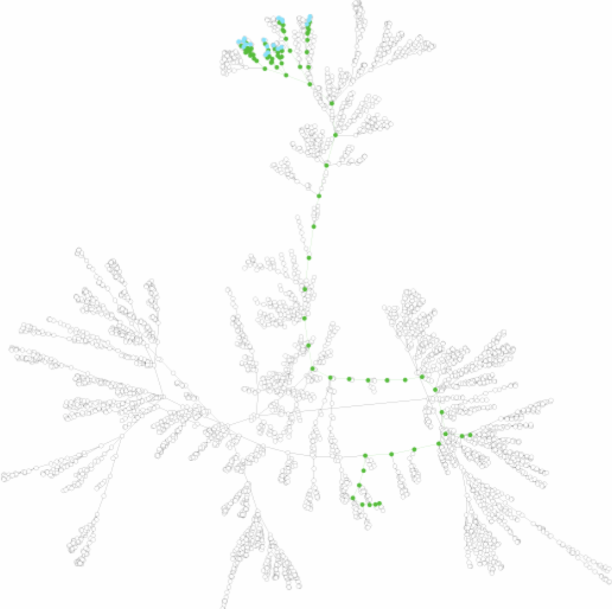
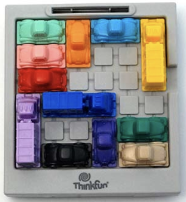
Two players take turns marking a cell in a 3 x 3 grid.
X and O, and X goes first.How might we represent a state?
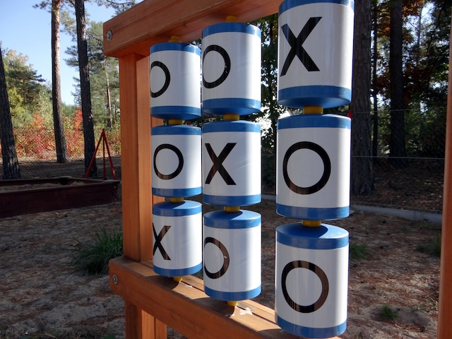
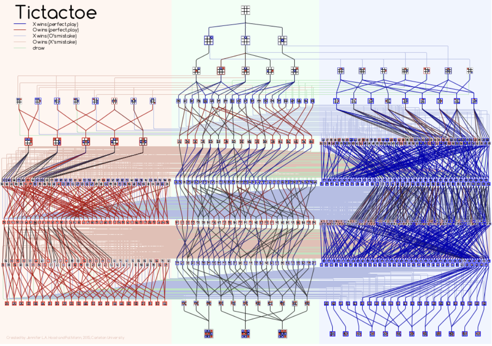
XKCD’s map of optimal moves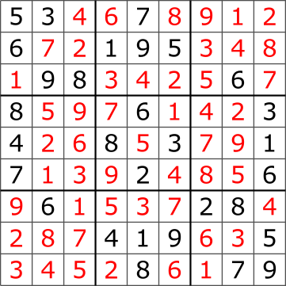
solution to example
[By en:User:Cburnett - CC BY-SA 3.0, Link]
For an evolving system (typically Markovian):
How might you represent this Sudoku state?
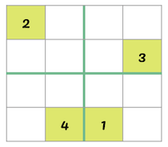
How many neighbors does this vertex have?
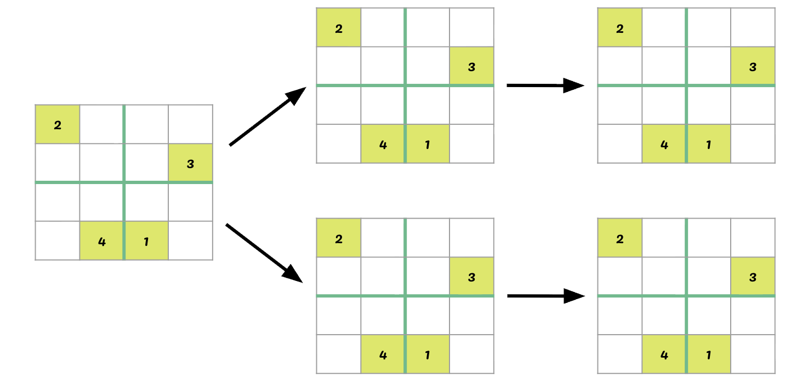
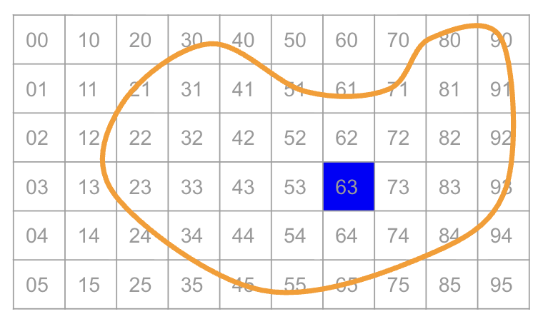
Other animations of BFS
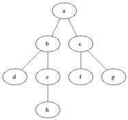
[By Blake Matheny, CC BY-SA 3.0]
Other animations of DFS
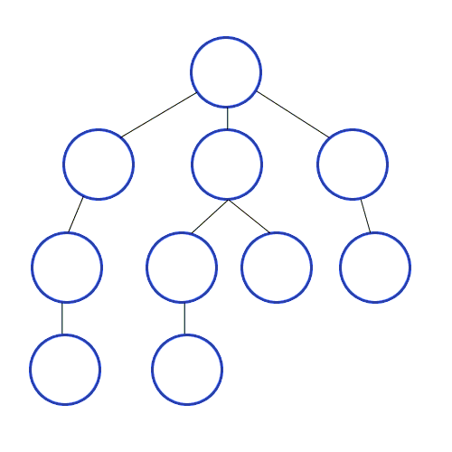
[By Mre, CC BY-SA 3.0]
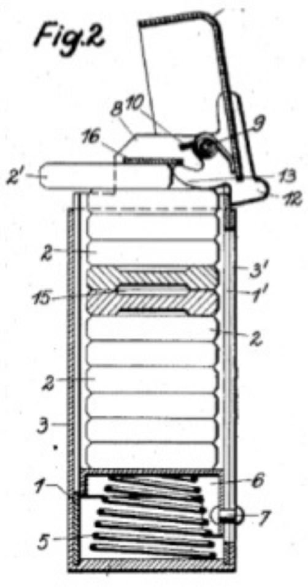
Pseudo-code stack functions:
Python deque (or list) functions:
append(item)pop() \(\rightarrow\) itempush(start_vertex)stack is not empty:
pop()v is not processed:
vw of v:
push(w)
Need to be able to check whether a state is valid.
Suppose we have a variable grid, representing the board, and we want to place a value called num, in position (x,y).
Need to check uniqueness in:
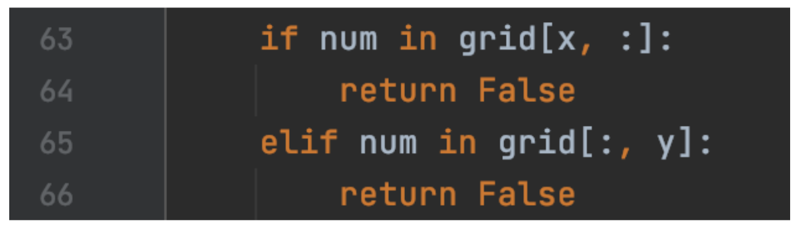
Python tidbit: to query a region in a 2d matrix, define the bounds on the region and use in.
In the small example below, 2 in grid[0:2,0:2] returns True.
Given location \((x,y)\), determine the block in which it lives.
s:t contains \(x\) if \(s\leq x< t\).x//r is the integer part of x/r.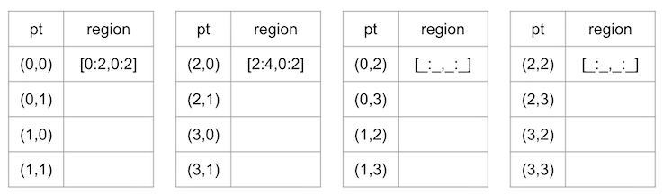
We could choose next cell:
Write a function postup that takes an integer position p as input, and returns an (x,y) position. The grid is size \(\times\) size.
Today’s activity is already coded for you, but let’s look through the code.
Launch Class Activity: Sudoku in PrairieLearn.
How fast does the state space grow as board size grows?
| size | cells | state space |
|---|---|---|
| 2 | 4 x 4 | |
| 3 | 9 x 9 | |
| 4 | 16 x 16 | |
| 5 | 25 x 25 | |
| \(r\) | \(r^2\) x \(r^2\) |
Could we be smarter about what values to consider?
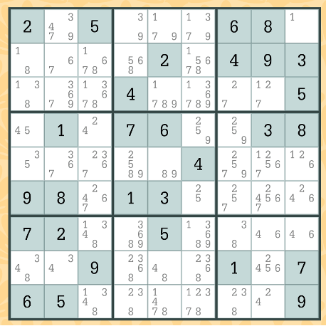